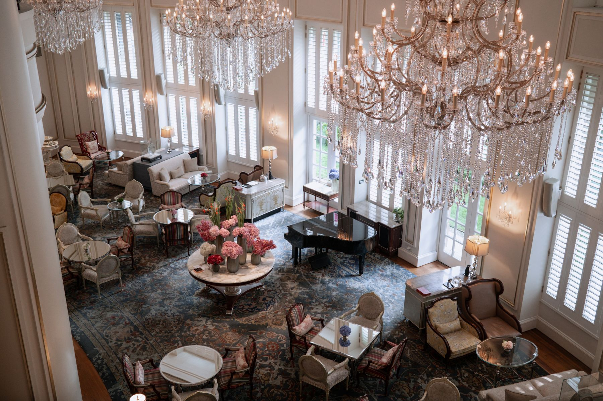

FIELD NOTES 01
FIELD NOTES 01DESIGN & ATMOSPHERE
Layered lighting for luxury interiors
A practical framework for balancing architecture, comfort and decorative light.
Five practical articles for lighting designers, consultants and contractors. Explore design decisions, technical checks and commissioning methods, then take the branded PDF with you.
FIELD NOTES 01A practical framework for balancing architecture, comfort and decorative light.
 FIELD NOTES 02
FIELD NOTES 02Read illuminance, uniformity and model assumptions together before approving a scheme.
 FIELD NOTES 03
FIELD NOTES 03Specify how light looks and how it renders materials as two related but different decisions.

FIELD NOTES 04A practical checklist for compatibility, low-level performance and useful scene control.
 FIELD NOTES 05
FIELD NOTES 05Reveal architecture, support movement and keep unwanted light under control.
Discuss a lighting concept, a technical challenge or a coordinated design and supply package with our studio.
Discuss your project ↗